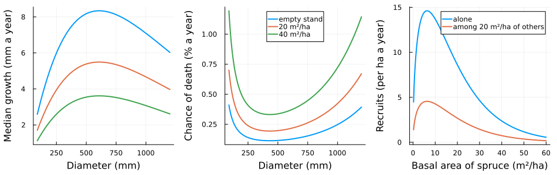
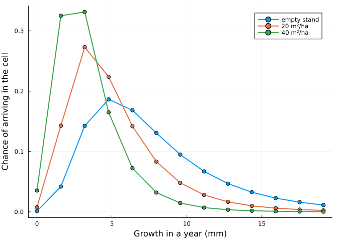
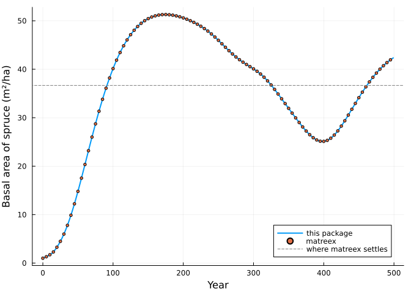
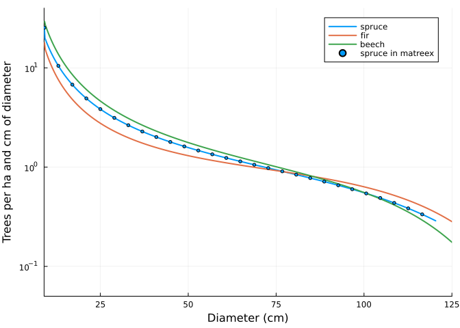
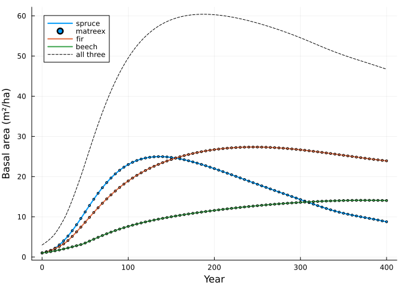
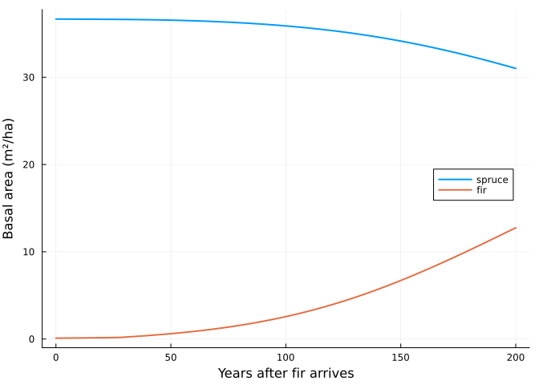
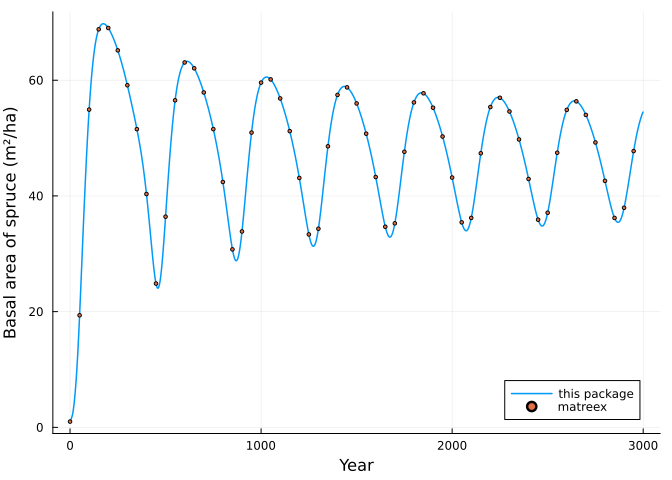

A forest on a large mesh: three tree species sharing one pool of basal area
Simon Frost
- Trees that meet only through basal area
- The vital rates of one species
- The life cycle as a net
- How the kernel changes with basal area
- A stand through time
- Where a stand settles
- Three species, one pool
- Who can invade whom
- Felling damps the swings
- The mesh, and what a step costs
- The comparison with matreex
- What is measured and what is assumed
- References
ENV["GKSwstype"] = "100"
using MatrixCommunityModels
using LinearAlgebra, Printf
using Plots
BLAS.set_num_threads(1) # eigenvalues of matrices this small are found fastest on one threadTrees that meet only through basal area
Forest inventories record the trunk diameter of every tree on a plot, and return to the plot some years later. From such records in five European countries, Kunstler et al. (2021) fitted how fast a tree grows and how likely it is to die, for 27 species, as functions of its diameter, of the climate and of the basal area of the stand. Basal area is the cross-sectional area of the trunks at breast height, added up over the trees of a stand and given in m² per hectare. It is the forester’s measure of how crowded a stand is. Guyennon et al. (2023) added recruitment, and the R package matreex (Jaunatre et al. 2024) packages the whole as integral projection models (IPMs) of species that can be run together.
In these models a species never refers to another species. Growth, death and recruitment depend on basal area, to which every tree of every species adds. A total that species add to and read is what this package calls a pool, so these are matrix community models with a single pool, and they can be written with the tools of the earlier IPM vignettes (composing IPMs, thistles and a weevil). What is new is the scale. Trunk diameter is cut into 700 mesh cells for each species, the mesh of matreex, and three species together have 2190 states. Like every community with a continuous stage, the stand is solved by IntegralProjectionModels.jl.
This vignette builds Norway spruce (Picea abies), silver fir (Abies alba) and European beech (Fagus sylvatica), composes them, and checks every step against matreex. It leaves out the parts of matreex that manage or disturb a stand: its harvesting rules, storms, fires and pests, and climates that change through time. A constant rate of felling, which is part of the published model, is kept.
The vital rates of one species
Size is trunk diameter in mm, the time step is a year, and numbers are trees per hectare. Three regressions describe a species. forest_vital_rates returns them as functions, at one climate:
rates = forest_vital_rates(:spruce)
FOREST_CLIMATE(sgdd = 1444.6666281571565, wai = 0.4519386923697269)The climate has two variables: sgdd, the yearly sum of degree days above 5.5 °C, and wai, a water availability index (precipitation minus potential evapotranspiration, divided by potential evapotranspiration). The default is the middle of the climatic range of spruce, the climate used in the introduction to matreex.
- Growth. The logarithm of the growth in diameter of a tree in a year is normally distributed. Its mean depends on diameter, on the logarithm of diameter, on the basal area of the stand and on climate.
- Death. The chance that a tree dies in a year, from a regression on the same variables.
- Recruitment. The number of recruits, the trees that newly reach the smallest diameter recorded (100 mm). It depends on the basal area of the species itself and on that of the other species.
d = 90:5:1200
stands = [0.0, 20.0, 40.0]
p1 = plot(d, [exp.(rates.log_increment.(d, b)) for b in stands]; lw = 2, xlabel = "Diameter (mm)",
ylabel = "Median growth (mm a year)", label = "")
p2 = plot(d, [100 .* rates.death.(d, b) for b in stands]; lw = 2, xlabel = "Diameter (mm)",
ylabel = "Chance of death (% a year)", label = ["empty stand" "20 m²/ha" "40 m²/ha"], legend = :top)
own = 0.25:0.25:60
p3 = plot(own, [rates.recruits.(own, 0.0) rates.recruits.(own, 20.0)]; lw = 2, xlabel = "Basal area of spruce (m²/ha)",
ylabel = "Recruits (per ha a year)", label = ["alone" "among 20 m²/ha of others"])
plot(p1, p2, p3; layout = (1, 3), size = (950, 300), left_margin = 5Plots.mm, bottom_margin = 6Plots.mm)
for b in stands
@printf("stand of %2.0f m²/ha: a spruce of 300 mm grows %.1f mm in a median year and dies with chance %.2f%%\n",
b, exp(rates.log_increment(300.0, b)), 100 * rates.death(300.0, b))
endstand of 0 m²/ha: a spruce of 300 mm grows 6.7 mm in a median year and dies with chance 0.13%
stand of 20 m²/ha: a spruce of 300 mm grows 4.4 mm in a median year and dies with chance 0.21%
stand of 40 m²/ha: a spruce of 300 mm grows 2.9 mm in a median year and dies with chance 0.37%In a stand of 40 m² per hectare a spruce of 300 mm grows less than half as fast as in an empty stand and is three times as likely to die, though that chance stays below half a percent a year. The recruitment of spruce is hump-shaped: with little basal area it has few trees to set seed, and with much of it the seedlings are shaded. The coefficients of the three regressions, for the three species, are in FOREST_PARAMETERS.
The life cycle as a net
A species has three stages: tree, which carries the diameter, and seedling and sapling, which hold recruits that have not yet reached 90 mm. forest_tree declares the life cycle with kernel_net, in the form below (abridged from src/forests.jl).
life = kernel_net([:seedling, :sapling, tree],
:growing => [(:tree => :tree) => responsive(ctx -> growing(ctx.pool.basal_area))],
:recruiting => [(:tree => :seedling) => d -> trunk_area(d) / 2,
(:tree => :sapling) => d -> trunk_area(d) / 2],
:establishing => [(:seedling => :sapling) => 1.0],
:ingrowth => [(:sapling => :tree) => d -> d < smallest ? kept / h : 0.0])
life = expand_stages(life, :sapling => delay - 1)
net = births(respond(life, :recruiting => recruiting), :recruiting)
species(name, net; occupies = [:basal_area => trait_weights(tree, trunk_area)])growingis the kernel of trees that survive, are not felled and grow: for a tree of each diameter now, the density of trees at each diameter a year later. Both growth and death depend on the basal area of the stand, so the kernel changes shape with the pool. It is markedresponsive: each year it is rebuilt from the pool’s total.recruitinggives each tree a share of the species’ recruits in proportion to its own basal area. The responserecruitingsupplies the number of recruits for each m² per hectare of the species, from the fitted function.- A recruit joins the smallest trees after a delay: 14 years for spruce, 28 for fir and 48 for beech, without loss on the way. It spends a year as a seedling and the rest as a sapling, a stage that
expand_stagesgives a fixed duration. matreex adds a year’s recruits to its first two classes, half each, so half of them are a year ahead; the same is done here, so that the two programs can be compared year by year. - The species adds the cross-sectional area of its trunks to the pool
basal_area.
One point needs care. A tree grows by a few mm a year, and a mesh cell is 1.6 to 2.5 mm wide, depending on the species, so the growth kernel is about as narrow as a cell. Evaluating it at the middle of each cell, the usual rule, would be badly wrong. The kernel handed to kernel_net is therefore the kernel averaged over cells. The chance that a tree arrives in a cell is the difference of the log-normal distribution function between the two edges of the cell, which is exact. The place of the tree within the cell it leaves is averaged by a three-point Gauss-Legendre rule. This is the scheme of matreex, except that matreex integrates over the arrival cell numerically.
spruce = forest_tree(:spruce)
tree = forest_stage(:spruce)
(states = length(spruce), cells = length(tree), cell_width_mm = round(step_size(tree); digits = 2),
stages = stage_names(spruce, :spruce)[[1, 2, 14, 15, end]], pools = pool_names(spruce))(states = 714, cells = 700, cell_width_mm = 1.59, stages = [:seedling, :sapling1, :sapling13, :tree1, :tree700], pools = [:basal_area])How the kernel changes with basal area
forest_stand makes a young stand of a chosen basal area, and community_matrix freezes the species in it. The block of the matrix among the tree cells is the growth kernel at that basal area. Its column for a tree of 300 mm is the chance of each diameter a year later:
z = meshpoints(tree)
tree_cells(sp, kind; cells = 700) = findall(in(stage_names(forest_stage(kind; cells))), stage_names(sp, kind))
frozen(sp, kind, b; cells = 700) = community_matrix(sp, forest_stand(kind; cells, basal_area = b), nothing)
kernel(sp, kind, b) = frozen(sp, kind, b)[tree_cells(sp, kind), tree_cells(sp, kind)]
from = findfirst(>=(300), z)
columns = [kernel(spruce, :spruce, b)[:, from] for b in stands]
plot(z[from:(from + 12)] .- z[from], [c[from:(from + 12)] for c in columns]; marker = :circle, lw = 2,
xlabel = "Growth in a year (mm)", ylabel = "Chance of arriving in the cell",
label = ["empty stand" "20 m²/ha" "40 m²/ha"])
for (b, column) in zip(stands, columns)
@printf("stand of %2.0f m²/ha: %.2f%% of the trees remain; they grow %.2f mm on average and %2.0f%% stay in their cell\n",
b, 100 * sum(column), sum((z .- z[from]) .* column) / sum(column), 100 * column[from] / sum(column))
endstand of 0 m²/ha: 99.28% of the trees remain; they grow 7.93 mm on average and 0% stay in their cell
stand of 20 m²/ha: 99.19% of the trees remain; they grow 5.22 mm on average and 1% stay in their cell
stand of 40 m²/ha: 99.04% of the trees remain; they grow 3.44 mm on average and 4% stay in their cellEach point of the figure is a mesh cell. In a crowded stand two thirds of the trees arrive in just two cells, which is why the average over cells matters. The share of trees that remain counts death and felling.
A stand through time
A stand is started with 1 m² per hectare of trees between 90 and 150 mm. The reference files in test/reference hold the same run in matreex, with its default settings (test/reference/R/run_forest_reference.R).
reference(file) = [split(l, ",") for l in readlines(joinpath(pkgdir(MatrixCommunityModels), "test", "reference", file))[2:end]]
number(x) = x == "NA" ? NaN : parse(Float64, x)
function matreex_run(run; file = "forest_runs_700.csv") # basal areas of spruce, fir and beech every five years
rows = [r for r in reference(file) if r[1] == run]
recorded = [r for r in rows if r[2] != "-1"]
return (years = [parse(Int, r[2]) for r in recorded], basal_area = [number(r[j]) for r in recorded, j in 3:5],
settled = [number(r[j]) for r in rows if r[2] == "-1" for j in 3:5])
end
alone = project(spruce, forest_stand(:spruce), fill(nothing, 500))
ref = matreex_run("spruce")
plot(0:499, alone.pools[1:500, 1]; lw = 2, label = "this package", xlabel = "Year", ylabel = "Basal area of spruce (m²/ha)")
scatter!(ref.years, ref.basal_area[:, 1]; ms = 2.5, label = "matreex")
hline!([ref.settled[1]]; ls = :dash, color = :grey, label = "where matreex settles")
apart = abs.(alone.pools[ref.years .+ 1, 1] ./ ref.basal_area[:, 1] .- 1)
(largest_relative_difference = maximum(apart), in_year = ref.years[argmax(apart)],
peak = round(maximum(alone.pools[1:500, 1]); digits = 1), peak_in_year = argmax(alone.pools[1:500, 1]) - 1)(largest_relative_difference = 0.0004775254883802038, in_year = 50, peak = 51.3, peak_in_year = 174)The stand overshoots and then swings slowly around the level at which it will settle. The cause is in the recruitment curve above. The young stand recruits freely; when its trees have grown, the stand is crowded and recruits fall away; the gap in the size distribution that results passes up through the diameters over centuries. The swings die out slowly: matreex needs 14,669 years before the basal area stays within a billionth of a m² per hectare for a century.
Where a stand settles
Iterating to the equilibrium would take thousands of steps. There is a shorter way. At equilibrium every tree is replaced on average, so the species frozen in its equilibrium stand has a growth rate of one. The matrix of the frozen species depends on the stand only through its basal area, and its growth rate falls as the basal area rises. The stand therefore settles at the basal area where the rate is one, and its size distribution there is the stable distribution of the frozen matrix. equilibrium does this when it is given the pool and a range to search, in place of a starting state alone.
growth_rate(A) = maximum(abs, eigvals(A))
# the basal area between 30 and 45 m²/ha at which the growth rate is one, and the stand there
settles(sp, kind; cells = 700) =
equilibrium(sp, :basal_area => (30.0, 45.0), forest_stand(kind; cells, basal_area = 30.0), nothing)
settled_stand(sp, kind) = settles(sp, kind).n
fir, beech = forest_tree(:fir), forest_tree(:beech)
trees = (spruce = spruce, fir = fir, beech = beech)
settled = (spruce = settled_stand(spruce, :spruce), fir = settled_stand(fir, :fir), beech = settled_stand(beech, :beech))
basal(kind) = pool_totals(trees[kind], settled[kind], nothing).basal_area
for kind in keys(trees)
n, sp = settled[kind], trees[kind]
standing = sum(n[tree_cells(sp, kind)])
@printf("%-6s settles at %.3f m²/ha (matreex: %.3f), with %.0f trees and %.0f seedlings and saplings per ha; a year moves the stand by %.0e\n",
kind, basal(kind), only(filter(!isnan, matreex_run(String(kind)).settled)), standing, sum(n) - standing,
maximum(abs, advance(sp, n, nothing) .- n) / maximum(n))
endspruce settles at 36.670 m²/ha (matreex: 36.669), with 251 trees and 40 seedlings and saplings per ha; a year moves the stand by 3e-14
fir settles at 42.604 m²/ha (matreex: 42.603), with 205 trees and 60 seedlings and saplings per ha; a year moves the stand by 6e-15
beech settles at 42.546 m²/ha (matreex: 42.546), with 306 trees and 137 seedlings and saplings per ha; a year moves the stand by 6e-15The stands found this way do not move when stepped, and they hold the basal areas that matreex reaches by simulation, to within three parts in 100,000. The size distributions:
plot(; xlabel = "Diameter (cm)", ylabel = "Trees per ha and cm of diameter", yscale = :log10, ylims = (0.05, 40), xlims = (9, 125))
for kind in keys(trees)
stage = forest_stage(kind)
plot!(meshpoints(stage) ./ 10, 10 .* settled[kind][tree_cells(trees[kind], kind)] ./ step_size(stage); lw = 2, label = String(kind))
end
theirs = [number(r[4]) for r in reference("forest_states_700.csv") if r[1] == "spruce"][15:end]
scatter!(z[1:25:end] ./ 10, 10 .* theirs[1:25:end] ./ step_size(tree); ms = 2.5, color = 1, label = "spruce in matreex")
Three species, one pool
Composing the species needs no change to any of them.
forest = community(spruce, fir, beech)
(species = species_names(forest), pools = pool_names(forest), states = length(forest))(species = [:spruce, :fir, :beech], pools = [:basal_area], states = 2190)young = [forest_stand(:spruce); forest_stand(:fir); forest_stand(:beech)] # 1 m²/ha of each
together = project(forest, young, fill(nothing, 400))
# the basal area a species holds is the pool total of that species on its own
held(sol, kind) = [pool_totals(subcommunity(sol.community, kind), row, nothing).basal_area for row in eachrow(sol[kind])]
ref3 = matreex_run("trio")
shown = ref3.years .<= 400
plot(; xlabel = "Year", ylabel = "Basal area (m²/ha)", legend = :topleft)
for (j, kind) in enumerate(keys(trees))
plot!(0:400, held(together, kind); lw = 2, color = j, label = String(kind))
scatter!(ref3.years[shown], ref3.basal_area[shown, j]; ms = 2, color = j, label = j == 1 ? "matreex" : "")
end
plot!(0:399, together.pools[1:400, 1]; lw = 1, ls = :dash, color = :black, label = "all three")
for (j, kind) in enumerate(keys(trees))
mine = held(together, kind)[ref3.years[shown] .+ 1]
@printf("%-6s largest relative difference from matreex over 400 years: %.1e\n", kind, maximum(abs.(mine ./ ref3.basal_area[shown, j] .- 1)))
endspruce largest relative difference from matreex over 400 years: 2.2e-04
fir largest relative difference from matreex over 400 years: 7.3e-04
beech largest relative difference from matreex over 400 years: 1.5e-04Spruce, with the shortest delay and the fastest early growth, leads for a century and a half and then gives way to fir. Beech rises slowly for nearly four centuries. The mixed stand also swings for a long time: matreex reaches its equilibrium after 5980 years. That equilibrium can be handed to this model as it stands, since both order their states in the same way:
there = [number(r[4]) for r in reference("forest_states_700.csv") if r[1] == "trio"]
(states = length(there), basal_area = round(pool_totals(forest, there, nothing).basal_area; digits = 3),
a_year_moves_it_by = maximum(abs, advance(forest, there, nothing) .- there) / maximum(there))(states = 2190, basal_area = 48.082, a_year_moves_it_by = 6.325058590388593e-6)A = community_matrix(forest, there, nothing)
ends = cumsum([0; [length(sp) for sp in trees]])
for (j, kind) in enumerate(keys(trees))
block = (ends[j] + 1):ends[j + 1]
@printf("%-6s holds %.2f m²/ha among the others (%.2f alone); frozen there its growth rate is %.7f\n",
kind, ref3.settled[j], basal(kind), growth_rate(A[block, block]))
endspruce holds 9.64 m²/ha among the others (36.67 alone); frozen there its growth rate is 1.0000001
fir holds 26.31 m²/ha among the others (42.60 alone); frozen there its growth rate is 1.0000002
beech holds 12.14 m²/ha among the others (42.55 alone); frozen there its growth rate is 1.0000000The equilibrium of matreex is an equilibrium of this model to within a few parts in a million: a year hardly moves it, and each species frozen there just replaces itself. Together the three hold more basal area than any of them alone, and each holds much less than it would alone.
Who can invade whom
The growth rate of a rare species in a stand of another tells whether it can invade. Here the question needs one more number. A species without trees has no recruits, and the recruits of a rare species for each m² of its basal area depend on how rare it is, because recruitment is not proportional to basal area (the curve above). Guyennon et al. (2023) therefore fix the basal area of the invader, at 0.1 m² per hectare, when they compute its rate of invasion. The keyword conspecific of forest_tree does the same: recruitment is computed as if the species held that basal area, whatever its numbers, which makes the species linear and gives it a growth rate.
rare = (spruce = forest_tree(:spruce; conspecific = 0.1), fir = forest_tree(:fir; conspecific = 0.1),
beech = forest_tree(:beech; conspecific = 0.1))
println("growth rate of an invader holding 0.1 m²/ha, in the settled stand of")
println(" ", join(rpad.(String.(keys(trees)), 9)))
for invader in keys(rare)
rates_in = [resident == invader ? " - " : @sprintf("%.4f ", invasion_growth_rate(rare[invader], trees[resident], settled[resident], nothing))
for resident in keys(trees)]
println(rpad(invader, 10), join(rates_in))
endgrowth rate of an invader holding 0.1 m²/ha, in the settled stand of
spruce fir beech
spruce - 1.0219 1.0220
fir 1.0501 - 1.0442
beech 1.0343 1.0305 -Every species increases when rare in the stand of every other, by 2% to 5% a year. The rarer the invader is taken to be, the faster it grows:
for held_by_fir in (0.01, 1.0, 10.0)
@printf("fir holding %5.2f m²/ha in the spruce stand: growth rate %.4f\n", held_by_fir,
invasion_growth_rate(forest_tree(:fir; conspecific = held_by_fir), spruce, settled.spruce, nothing))
endfir holding 0.01 m²/ha in the spruce stand: growth rate 1.0975
fir holding 1.00 m²/ha in the spruce stand: growth rate 1.0227
fir holding 10.00 m²/ha in the spruce stand: growth rate 1.0080This is why all three species persist together. It follows from the fitted recruitment functions. At low basal area the number of recruits rises with the basal area of the species as its power 0.52 for spruce and 0.06 for fir, and falls as its power 0.10 for beech. A species with a hundredth of the basal area thus has a tenth of the recruits (spruce), three quarters of them (fir) or one and a half times as many (beech). The functions could only be fitted to plots on which the species was present, since they use the logarithm of its basal area. Read as statements about a species with almost no trees, they say that recruits appear whether or not there are trees to produce them, as they would if seed arrived from outside the stand. Coexistence in this model is therefore built into the recruitment functions. It is not a result about the three species.
A projection shows an invasion. Fir is added to the settled spruce stand as 0.1 m² per hectare of small trees:
arrival = project(community(spruce, fir), [settled.spruce; forest_stand(:fir; basal_area = 0.1)], fill(nothing, 200))
plot(0:200, [held(arrival, :spruce) held(arrival, :fir)]; lw = 2, label = ["spruce" "fir"], xlabel = "Years after fir arrives",
ylabel = "Basal area (m²/ha)", legend = :right)
fir_held = held(arrival, :fir)
(fir_after_50_years = round(fir_held[51]; digits = 2), after_100 = round(fir_held[101]; digits = 2), after_200 = round(fir_held[201]; digits = 2),
yearly_increase_between_years_50_and_100 = round((fir_held[101] / fir_held[51])^(1 / 50); digits = 4))(fir_after_50_years = 0.61, after_100 = 2.57, after_200 = 12.75, yearly_increase_between_years_50_and_100 = 1.0291)For its first 27 years the fir gains no trees, because its recruits are still on their way; its trees only grow in diameter. In its second half-century it increases by 3% a year, between the rates computed above for a fir holding 0.1 and 1 m² per hectare.
Felling damps the swings
The model fells 0.6% of the trees each year, the default of matreex. Without felling the stand holds more basal area, and the swings of spruce alone are still more than 20 m² per hectare wide after 3000 years. This run uses 100 cells, and the reference for it was made with finer numerical settings in matreex than its defaults (see below).
unfelled = forest_tree(:spruce; cells = 100, harvest = 0.0)
long = project(unfelled, forest_stand(:spruce; cells = 100), fill(nothing, 3000))
ref0 = matreex_run("unharvested"; file = "forest_runs_100.csv")
plot(0:2999, long.pools[1:3000, 1]; lw = 1.5, label = "this package", xlabel = "Year", ylabel = "Basal area of spruce (m²/ha)")
scatter!(ref0.years[1:5:end], ref0.basal_area[1:5:end, 1]; ms = 2, label = "matreex")
(largest_relative_difference = maximum(abs.(long.pools[ref0.years .+ 1, 1] ./ ref0.basal_area[:, 1] .- 1)),
range_in_the_last_thousand_years = round.(extrema(long.pools[2001:3000, 1]); digits = 1))(largest_relative_difference = 2.6439439794190278e-5, range_in_the_last_thousand_years = (34.0, 57.0))The mesh, and what a step costs
println("cells states ms per step settled basal area: spruce fir beech")
for cells in (100, 200, 350, 700)
stands_here = cells == 700 ? trees : (spruce = forest_tree(:spruce; cells), fir = forest_tree(:fir; cells), beech = forest_tree(:beech; cells))
n = forest_stand(:spruce; cells, basal_area = 30.0, diameters = (90, 600))
advance(stands_here.spruce, n, nothing)
step = minimum(@elapsed(advance(stands_here.spruce, n, nothing)) for _ in 1:5)
found = cells == 700 ? [basal(k) for k in keys(trees)] : [settles(stands_here[k], k; cells).total for k in keys(trees)]
@printf("%5d %6d %11.1f %26.2f %6.2f %6.2f\n", cells, length(stands_here.spruce), 1000 * step, found...)
endcells states ms per step settled basal area: spruce fir beech
100 114 0.3 37.51 43.96 40.51
200 214 0.9 36.90 43.36 44.32
350 364 2.8 36.69 42.76 43.53
700 714 10.9 36.67 42.60 42.55The time is for one year of spruce alone, on the machine that rendered this page; the three species together take three times as long. Almost all of it goes on rebuilding the growth kernel: 490,000 entries for each species each year, of which those within reach of a year’s growth are computed and the rest are zero.
matreex works differently. Before a run it tabulates the kernel of each species at every whole number of m² per hectare, which took it 36 to 63 seconds for a species on the machine used for the reference runs, and during a run it interpolates between the two nearest tables, at about 5 ms a year for spruce alone. Here the kernel is by default exact at the basal area of the year, at several times the cost for each year. forest_tree(kind; tabulate = 0:1:80) does what matreex does instead: the kernel is built once at each whole number of m² per hectare that the stand reaches and interpolated in between, which makes a year about five times faster and keeps the basal area within 1e-4 of the exact run.
The mesh matters more here than in the earlier vignettes, where a pool total hardly changed with the number of cells. On a coarse mesh trees are placed anew within a wide cell every year, which changes how fast they move through the diameters. The settled basal area of beech is 4% too high on 200 cells and 2% on 350. Kunstler et al. (2021) report that their results stopped changing above about 800 cells.
The top of the mesh matters too. The mesh ends at 1.1 times the largest tree in the data, and a tree that grows past the end is lost. The share of the settled spruce stand lost in this way each year is the difference between the trees that survive and the trees the kernel keeps:
spruce_trees = settled.spruce[tree_cells(spruce, :spruce)]
surviving = (1 - 0.006) .* (1 .- rates.death.(z, basal(:spruce))) # alive and not felled, by cell
kept = vec(sum(kernel(spruce, :spruce, basal(:spruce)); dims = 1))
(outgrow_the_mesh = sum((surviving .- kept) .* spruce_trees) / sum(spruce_trees),
die = sum(rates.death.(z, basal(:spruce)) .* spruce_trees) / sum(spruce_trees))(outgrow_the_mesh = 0.00037743230027865077, die = 0.0054728894131006916)For spruce the end of the mesh, at 1.2 m, removes 0.04% of the trees a year, a fifteenth as many as die. For fir and beech, whose meshes end at 1.6 and 1.8 m, the same sum gives less than one tree in 100,000 a year.
The comparison with matreex
The kernels can be compared entry by entry. matreex integrates the growth of a year by Gauss-Legendre quadrature for the cells a tree can reach by growing less than 50 mm, and by a coarser rule for the 25 cells beyond. The reference file holds, for five cells of origin, the entries of the first kind and the sum of the whole column, which is the share of the trees of the cell that are kept. The largest differences from matreex in each (its kernels are without felling, so the felling is taken out of ours):
rows = reference("forest_kernel_700.csv")
println(" stand kernel entries share of trees kept")
for kind in keys(trees), b in (0.0, 30.0)
K = kernel(trees[kind], kind, b) ./ (1 - 0.006)
mine = [r for r in rows if Symbol(r[1]) == kind && number(r[2]) == b]
entries = maximum(abs(K[parse(Int, r[3]), parse(Int, r[4])] - number(r[5])) for r in mine if r[3] != "0")
shares = maximum(abs(sum(K[:, parse(Int, r[4])]) - number(r[5])) for r in mine if r[3] == "0")
@printf("%-6s %2.0f m²/ha %14.1e %19.1e\n", kind, b, entries, shares)
end stand kernel entries share of trees kept
spruce 0 m²/ha 6.5e-15 2.0e-04
spruce 30 m²/ha 2.0e-14 3.6e-06
fir 0 m²/ha 3.6e-14 2.2e-04
fir 30 m²/ha 1.5e-11 7.8e-06
beech 0 m²/ha 1.1e-11 3.5e-05
beech 30 m²/ha 8.6e-10 1.7e-06| Check against matreex | Agreement |
|---|---|
| Vital rates at 108 combinations of diameter and basal area | relative difference below 1e-12 |
| Kernel entries within 50 mm of growth, 700 cells | below 1e-9 |
| Share of the trees of a cell kept, 700 cells | 2e-4 in an empty stand, 1e-5 at 30 m²/ha |
| Basal area at which each species settles alone, 700 cells | relative difference below 3e-5 |
| Spruce alone over 500 years; three species over 400 years | relative difference below 1e-3 |
| matreex’s equilibria of one and of three species, stepped once here | moved by less than 1e-4 of the largest cell |
| The same runs on 100 cells with finer settings in matreex | relative difference below 1e-5; equilibria within 1e-6 |
Three things separate the two programs, all of them numerical.
- Fast growth. Beyond 50 mm of growth in a year matreex uses a coarse rule, and beyond 90 to 110 mm, depending on the species, nothing. Such growth is rare except in a nearly empty stand, where up to 0.02% of the trees of a cell are affected each year. Here growth is cut off only beyond six standard deviations of its logarithm, which leaves out less than one tree in a billion. This is the larger part of the difference in the runs from young stands, which is greatest about year 50, while the trees still grow fast.
- Interpolation. matreex interpolates its kernels between whole basal areas; this model computes the kernel at the basal area of the year. Interpolating the kernels of this model in the same way changes the run of spruce by 1e-4 (a check made while writing this page, not shown on it).
- Quadrature. matreex integrates over the arrival cell with 140 points. On 700 cells that is as good as exact. On coarser meshes it is not: on 100 cells its entries are off by up to 4e-5, enough to move the settled basal area of beech by 0.1%.
The last row of the table removes the first and third of these and reduces the second. matreex was run on 100 cells with 2000 quadrature points over every cell within 200 mm of growth, and with kernels tabulated every 0.25 m² per hectare. The package’s tests compare this model with those runs: kernel entries agree to 4e-10, runs of one, two and three species over 495 years to 7e-6, and the settled basal areas to 3e-7. When the tests also interpolate this model’s kernels as matreex does, the run of spruce agrees to 3e-8.
What is measured and what is assumed
| Quantity | Value | Source |
|---|---|---|
| Growth and death of trees | regressions on diameter, basal area and climate | fitted to inventories by Kunstler et al. (2021); means of their 100 fits to resampled data, as shipped with matreex 0.4.0 |
| Recruitment | regression on the species’ own basal area and that of others | matreex 0.4.0; these coefficients differ from the fits archived with Guyennon et al. (2023) |
| Climate | 1445 degree days, water availability index 0.45 | matreex, middle of the range of spruce |
| Delay from recruitment to 90 mm | 14, 28 and 48 years | matreex 0.4.0; Guyennon et al. (2023) used 10 years for every species |
| Felling | 0.6% of trees a year | matreex and the scripts of Guyennon et al.; Kunstler et al. give 0.5% |
| Mesh | 90 mm to 1.1 times the largest tree in the data, 700 cells | matreex |
| Half of a year’s recruits a year ahead; no death while waiting; all join the smallest cell | as matreex computes | |
| Recruits shared among trees in proportion to basal area | scripts of Guyennon et al.; matters only for a frozen species | |
| A rare invader holds 0.1 m²/ha | Guyennon et al. (2023) | |
| The same climate for all three species | assumed here, as in matreex’s own two-species example | |
| Young stands of 1 m²/ha between 90 and 150 mm | assumed here, as a starting point |
The model and its sources part in these ways:
- The recruitment coefficients of matreex 0.4.0 are not those published. For spruce the power of its own basal area is 0.52 in matreex and 0.18 in the mean of the archived fits. The package’s notes say the recruitment models were updated; no paper describes the update.
- The fitted functions are used outside the data. Stands in the inventories have a smallest tree of 100 mm and basal areas up to 126 m² per hectare; the recruitment of a species with almost no trees, on which invasion and coexistence rest, is an extrapolation.
- Fir and beech are run at the climate where spruce is in the middle of its range. It lies within the range of both, but is not the middle of either.
- Trees that outgrow the mesh are lost, as in matreex. For spruce that is a loss of 0.04% of the trees a year in the settled stand, which a real stand does not suffer.
- Spruce alone without felling swings for thousands of years; matreex had not met its criterion for equilibrium after 50,000. Both programs agree, so this is a property of the model. Inventories a decade apart cannot say whether stands behave so.
- Only basal area links the species. A small tree under large ones and a large tree over small ones are crowded alike.
The source of matreex 0.4.0 was read in full for the parts used here (building the kernels, the simulation, the recruitment and delay, the fitted objects) and in part for the parts left out (harvesting rules, disturbance, changing climate). Kunstler et al. (2021) was read as the accepted manuscript and Guyennon et al. (2023) as published, both without their supporting information. The scripts archived with Guyennon et al. were read in part, for the simulation, the invasion rate and the fitted coefficients, which were compared with those of matreex. The website of matreex could not be reached.
References
Guyennon, A. (2022). Source code for “Beyond mean fitness: demographic stochasticity and resilience matter at tree species climatic edges”, version 1.2. Zenodo. https://doi.org/10.5281/zenodo.6424490
Guyennon, A., Reineking, B., Salguero-Gomez, R., Dahlgren, J., Lehtonen, A., Ratcliffe, S., Ruiz-Benito, P., Zavala, M. A. & Kunstler, G. (2023). Beyond mean fitness: demographic stochasticity and resilience matter at tree species climatic edges. Global Ecology and Biogeography 32, 573-585.
Jaunatre, M., Barrere, J., Cordonnier, T., Guyennon, A., Reineking, B., Touzot, L. & Kunstler, G. (2024). matreex: simulation IPM for forest dynamic depending on climatic variables. R package version 0.4.0. https://github.com/gowachin/matreex
Kunstler, G., Guyennon, A., Ratcliffe, S., Rüger, N., Ruiz-Benito, P., Childs, D. Z., Dahlgren, J., Lehtonen, A., Thuiller, W., Wirth, C., Zavala, M. A. & Salguero-Gomez, R. (2021). Demographic performance of European tree species at their hot and cold climatic edges. Journal of Ecology 109, 1041-1054.